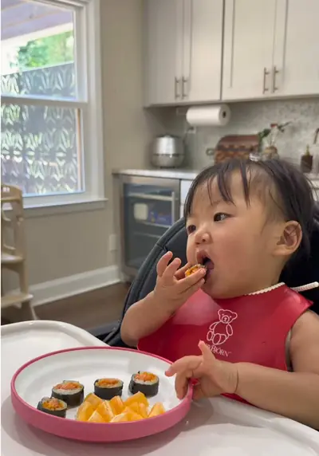

These salmon rice rolls are packed with protein, veggies, and healthy fats,…

Ingredients
- Steamed sticky rice
- 1 sushi nori sheet
- Salmon fillet
- Grated carrots
- Butter
- Garlic powder
- Sesame oil
Steps
- Sauté the grated carrots in a little butter and set aside.
- Cook the salmon on both sides, making sure it’s fully cooked.
- Remove any bones and slice into strips.
- Spread steamed sticky rice evenly over the nori sheet.
- Add a strip of salmon and the cooked carrots.
- Roll tightly, brush the outside with a little sesame oil, and slice into bite-sized pieces.
- Every child develops chewing skills at their own pace.
- You know your little one best, so if they aren’t chewing well yet, this recipe may not be appropriate for them.
Recipe text as written by @busymamaeasybites on TikTok. Open original